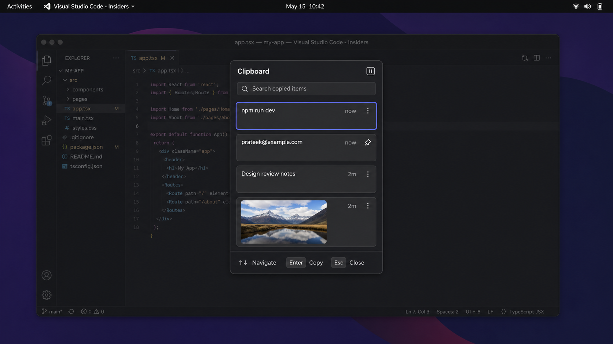

Super+V
The flyout appears over the active app without entering Activities or opening another window.
Press Super+V anywhere to reveal a fast, searchable clipboard flyout over the current app; choose an item from the keyboard and paste it without breaking focus.

Super+VThe flyout appears over the active app without entering Activities or opening another window.
Typing filters instantly. Arrow keys move through recent and pinned items.
EnterThe selected content is restored and pasted into the app that was active before the flyout.
Focus returns to the original app. The selected item becomes most recent.
| Moment | What the user experiences |
|---|---|
| When content is copied | Text and images enter history in the background. Consecutive duplicates collapse into one item; an older duplicate moves to the top instead of creating another copy. |
| When opened | The popup appears on the monitor containing the focused window, centered slightly above the midpoint. The desktop behind it dims subtly, the newest item is selected, and search is ready immediately. |
| While searching | Normal typing filters text items by content. Search never modifies the stored history. Clearing the query returns to the full list with pins first and recent items below. |
| When navigating | ↑/↓ move one item, Page Up/Page Down move a viewport, and Home/End jump to the first or last result. Pointer and touch remain supported. |
| When choosing an item | Enter makes the item current, closes the popup, restores focus, and attempts an immediate paste—the Windows-like default. Shift+Enter copies without auto-pasting. |
| If direct paste is unsafe | For an unsupported app or protected field, the item is still copied, focus returns, and a small notice says “Copied — press Ctrl+V”. Content is never sent to the wrong window merely to preserve auto-paste. |
| When dismissed | Escape, Super+V again, clicking outside, changing workspace, or locking the screen closes the popup without changing the clipboard. |
| After restart | Pinned items and the allowed recent history return. The last copied item is not automatically pasted or exposed on screen. |
Clipboard title, one privacy/pause control, and a single search field. No settings maze inside the frequent-use path.
Preview, relative age, pin state, and a quiet overflow action. Long text is clamped; selecting a card can reveal more without resizing the whole popup.
A strong indigo outline and surface change identify the keyboard target. Selection never depends on hover alone.
Only the essential commands remain visible: navigate, paste, and close. Secondary actions appear contextually or through keyboard help.
| Shortcut | Action | Notes |
|---|---|---|
Super+V |
Open or close clipboard | GNOME notifications keep their existing alternative, Super+M. |
Enter |
Paste selected item | Returns focus and closes on success or safe copy-only fallback. |
Shift+Enter |
Copy without paste | Useful for terminals, remote desktops, and protected fields. |
Ctrl+P |
Pin or unpin | Pinned entries persist until explicitly deleted. |
Delete |
Delete selected item | Removal is immediate; selection moves to the next item. |
Ctrl+Shift+Delete |
Clear unpinned history | Requires a confirmation surface because it is destructive. |
Escape |
Close without action | Leaves clipboard and history unchanged. |
No account, sync, analytics, network calls, or cloud processing. Stored content is local and bounded by both item count and payload size.
Super+V opens and dismisses a focus-safe popup on the active monitor; keyboard navigation feels immediate.Super+V with a warm history.Escape always restores the previous app without changing clipboard state.This is a personal GNOME 46 tool first. “Windows-style” means the rapid Super+V flyout workflow and direct reuse of an item, while the visual treatment adapts to GNOME rather than copying Microsoft assets pixel-for-pixel. The generated concept is directional; accessibility, theme integration, and Shell performance take priority over exact visual fidelity.